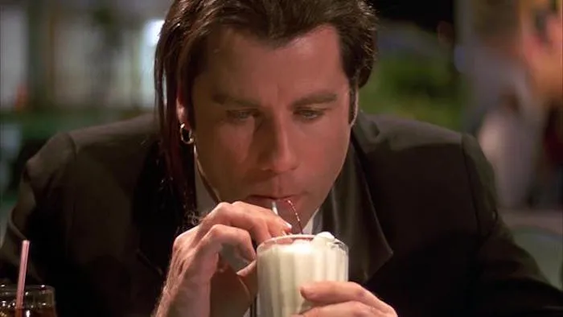

Üdv a Tasty Burger-ben!
 Nálunk a hamburgerek nem csak kaják – karakterek. Ez nem egy szokványos
gyorsétterem. Ez egy neo-noir burger-univerzum, egy szelet mozi, egy harapásnyi Tarantino.
Itt minden falat egy idézet, minden íz egy jelenet. A menü nem csak étel, hanem tisztelgés a
kultfilm mesterműve előtt: a “Jules’ Fury” burgerben ott a harag, az “$5 Milkshake”-ben a stílus, a
“Briefcase Surprise”-ban pedig… valami, ami ragyog.
Nálunk a hamburgerek nem csak kaják – karakterek. Ez nem egy szokványos
gyorsétterem. Ez egy neo-noir burger-univerzum, egy szelet mozi, egy harapásnyi Tarantino.
Itt minden falat egy idézet, minden íz egy jelenet. A menü nem csak étel, hanem tisztelgés a
kultfilm mesterműve előtt: a “Jules’ Fury” burgerben ott a harag, az “$5 Milkshake”-ben a stílus, a
“Briefcase Surprise”-ban pedig… valami, ami ragyog.
Az enteriőr? VHS retró, neonfény és vérbeli noir hangulat. A zene? Pont az, amitől Mia Wallace elkezdene táncolni. A kiszolgálás? Gyors, határozott, mint Mr. Wolf. Nem érdekel a sablonburger? Jó. Minket se. A Tasty Burger azoknak szól, akik szeretik az erős ízeket, az ikonikus pillanatokat, és nem félnek idézőjelesen enni.
Tasty Burger – a sztorink
 Nem egy újabb burgeres vagyunk. Egy jelenet vagyunk a kedvenc filmedből.
A Tasty Burger nem csak egy hely, ahol hamburgert kapsz. Ez egy életérzés, egy mozi-univerzum,
ahol a grillsütő mögött Tarantino szelleme lebeg, és ahol minden falat egy kultidézet.
A sztorink valahol ott kezdődött, amikor egy átlagos nap végén feltettük magunknak a kérdést:
„Mi lenne, ha a világ legmenőbb burgerét nem csak jól készítenénk el, hanem stílussal?”
És akkor megszületett a Tasty Burger – egy olyan hely, ahol a burger annyira jó, hogy idézőjelbe
tennéd.
Nem egy újabb burgeres vagyunk. Egy jelenet vagyunk a kedvenc filmedből.
A Tasty Burger nem csak egy hely, ahol hamburgert kapsz. Ez egy életérzés, egy mozi-univerzum,
ahol a grillsütő mögött Tarantino szelleme lebeg, és ahol minden falat egy kultidézet.
A sztorink valahol ott kezdődött, amikor egy átlagos nap végén feltettük magunknak a kérdést:
„Mi lenne, ha a világ legmenőbb burgerét nem csak jól készítenénk el, hanem stílussal?”
És akkor megszületett a Tasty Burger – egy olyan hely, ahol a burger annyira jó, hogy idézőjelbe
tennéd.
mi vezérel minket?
 Minőség, karakterrel: Nálunk nincsen sablon. Minden burger, shake és desszert egyedi recept, pont
úgy, ahogy egy Tarantino karakter is sosem sablonos.
Filmrajongóknak, kajamániásoknak: Ha egyszer ettél nálunk, nem csak jóllaksz – elviszel egy
jelenetet magaddal.
Stílus és szemtelenség: Mert a világ tele van unalmas gyorsételekkel. Mi nem kérünk belőle. És te
sem fogsz elégedetlenül távozni.
Minőség, karakterrel: Nálunk nincsen sablon. Minden burger, shake és desszert egyedi recept, pont
úgy, ahogy egy Tarantino karakter is sosem sablonos.
Filmrajongóknak, kajamániásoknak: Ha egyszer ettél nálunk, nem csak jóllaksz – elviszel egy
jelenetet magaddal.
Stílus és szemtelenség: Mert a világ tele van unalmas gyorsételekkel. Mi nem kérünk belőle. És te
sem fogsz elégedetlenül távozni.
egy kis kontextus…
Hogy miért a ponyvaregény? mert az a film, ahol egy burger filmtörténelmi jelentőségű lett. és mi szeretnénk, ha nálunk minden burger legalább olyan emlékezetes lenne, mint jules monológja.
rólad is szól
 a Tasty Burger nem csak rólunk szól.
ez rólad is szól, ha:
• szereted az egyedi helyeket,
• kajában is keresed a sztorit,
• tudod, mi az a „royale with cheese”,
• vagy csak egyszerűen… szeretsz jókat enni, stílusosan.
a Tasty Burger nem csak rólunk szól.
ez rólad is szól, ha:
• szereted az egyedi helyeket,
• kajában is keresed a sztorit,
• tudod, mi az a „royale with cheese”,
• vagy csak egyszerűen… szeretsz jókat enni, stílusosan.
ugorj be hozzánk!
Tudni akarod, mitől tasty egy burger? A Jules-féle harag, a Mia-féle milkshake és a megannyi Ponyvaregény szereplők által alkotta ízletes burgereink? Akkor ezernyi kaland vár. Irány a menü!